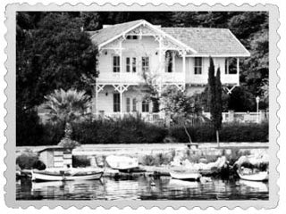
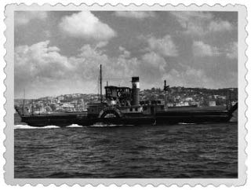

Gebze Köşkü (Osman Hamdi Bey Müzesi)

Suhulet Arabalı Vapur
1872 yılının başlarında hizmete giren dünyanın ilk arabalı vapurudur. 1871 yılında yapımı tamamlanan adı “Kolaylık” anlamına gelen vapur, 157 tondu. Uzunluğu 45,7 metre, genişliği 8,5 metre. İstanbul’a 87 yıl hizmet veren Suhulet, Çanakkale Savaşları sırasındaki hizmetleri ile “Gazi” unvanını da almıştır.
